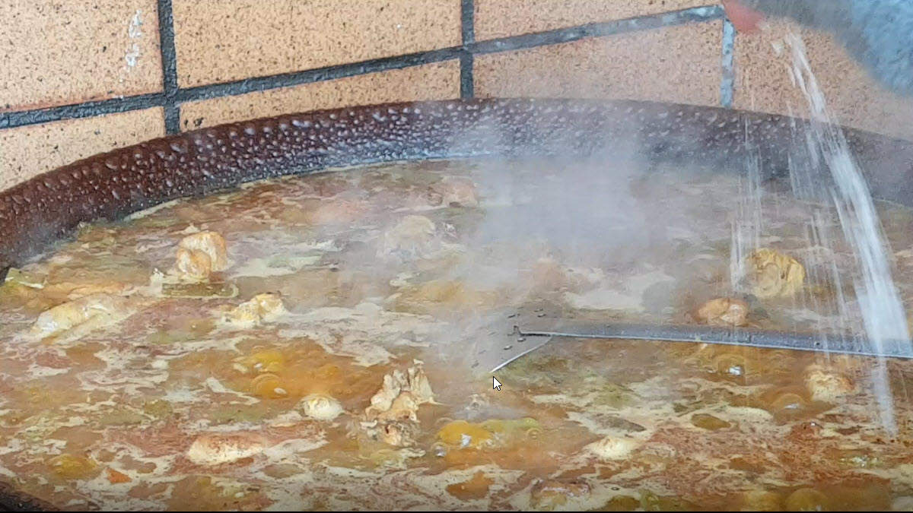
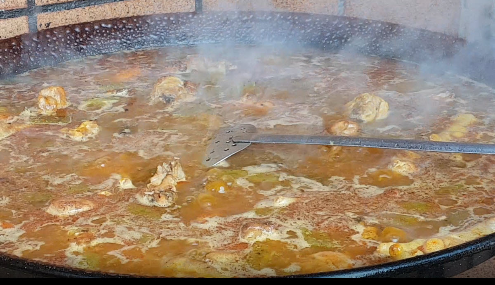
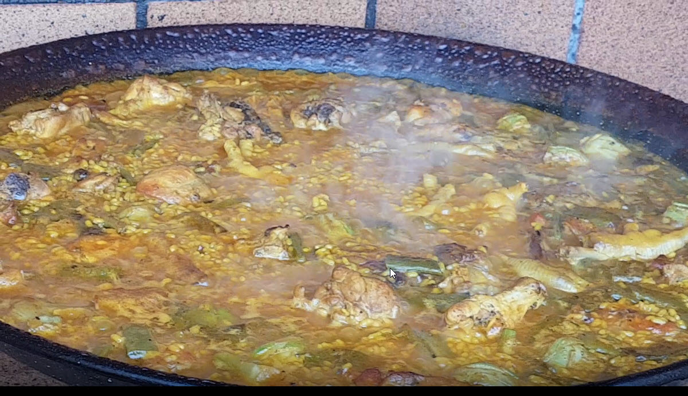

1º Sofreimos los ingredientes, pollo,conejo y judias verdes planas
Se me olvido echamos tomate triturado una lata
2ºRemovemos los ingredientes
3º Echamos colorante
4º Echamos agua
Asi debe quedar llena de agua
5º Despues de volver a remover echamos sal/p> 
6º Seguidamente echamos el arroz
7º Esparicmos bien el arroz por la paella
8º echamos la alcachofa y la repartimos bien por la paella
9º dejamos la paella que baje el agua y la vigilamos /p> 
10º ahora solo tenemos que ir bajando el fuego y esperar a que quede como en la ultima foto/p> 
11º lISTA PARA COMER
Aqui os dejo el video que he subido a mi canal de youtube PARANORMAL841